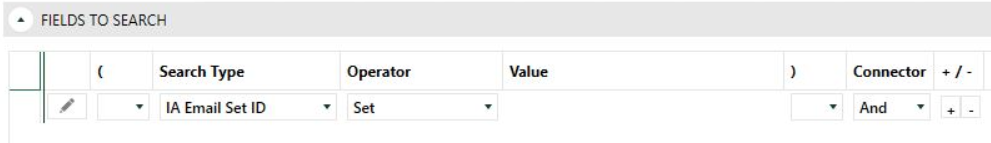
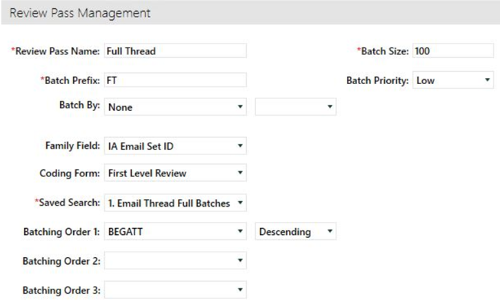

Create a new Advanced Search called Email Thread Batches. Include Families on the search by ensuring the option to Include Family is selected from the drop-down.

The criteria of the search should identify all families that received an Email Thread value. This can be accomplished by searching for any documents where the IA Email Set ID field contains a value.

Create a new Review Pass and identify your Advanced Search for the documents to be batched:
-
Set Batching Order 1: in your Review Pass to BEGATT descending
-
Choose a batch size to fit your needs.
-
Identify a batch prefix.
-
Set the family field to IA Email Set ID to ensure all families and threads are kept together.
- Sort the Review Pass by IA Email Sort descending.
-
Save and Create Batches.
